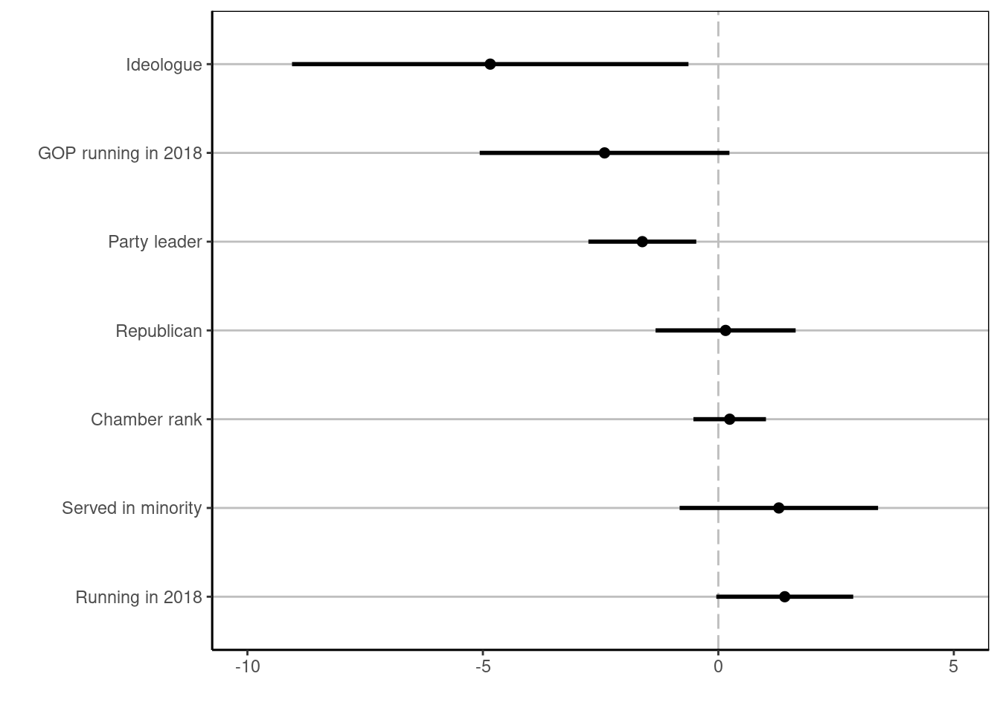
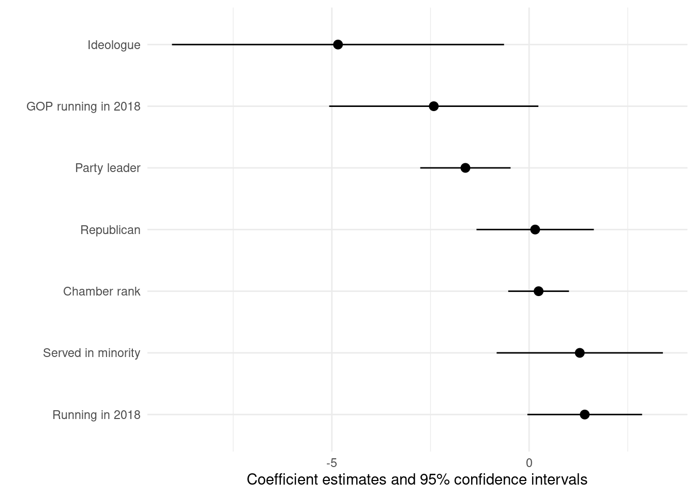
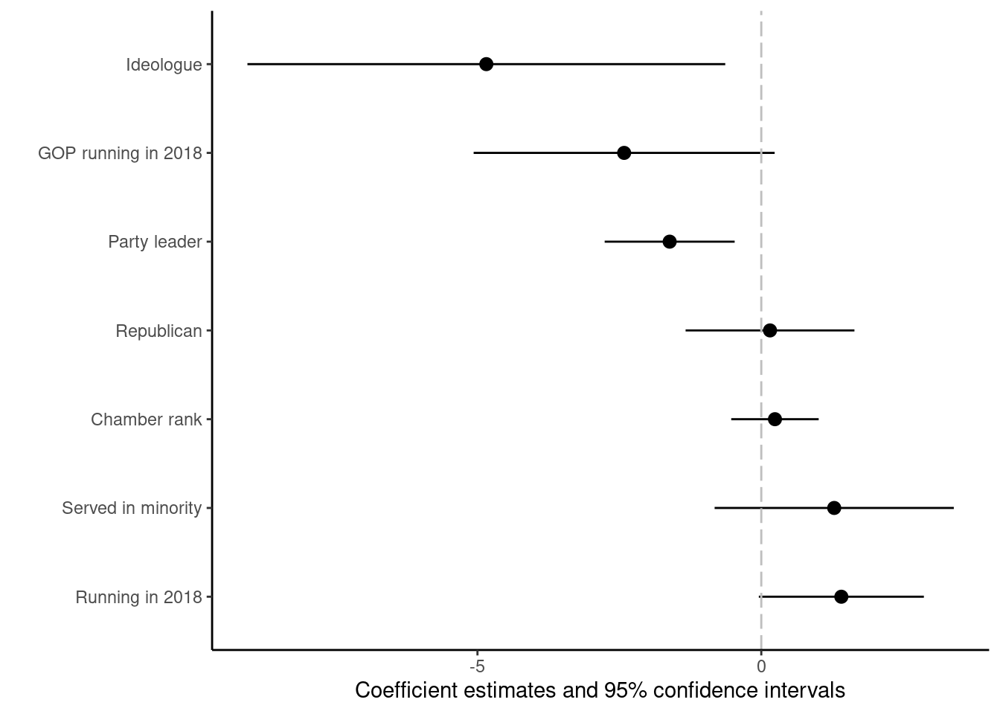
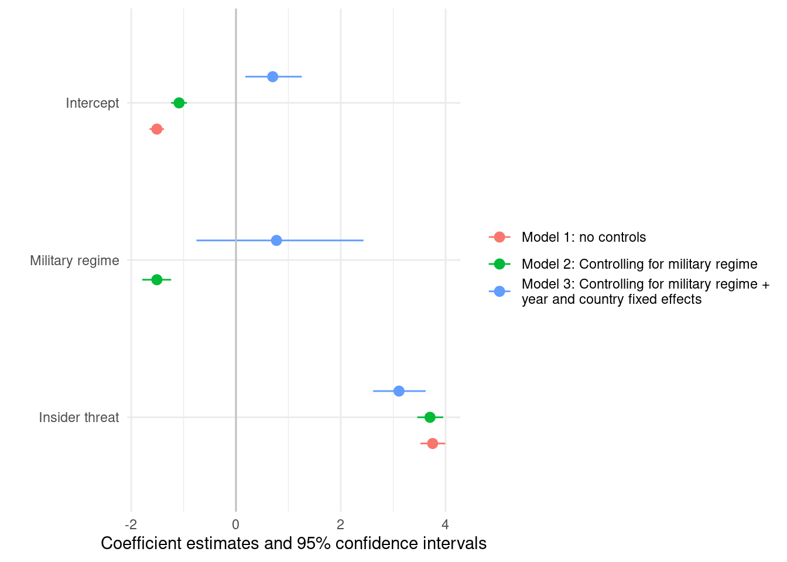
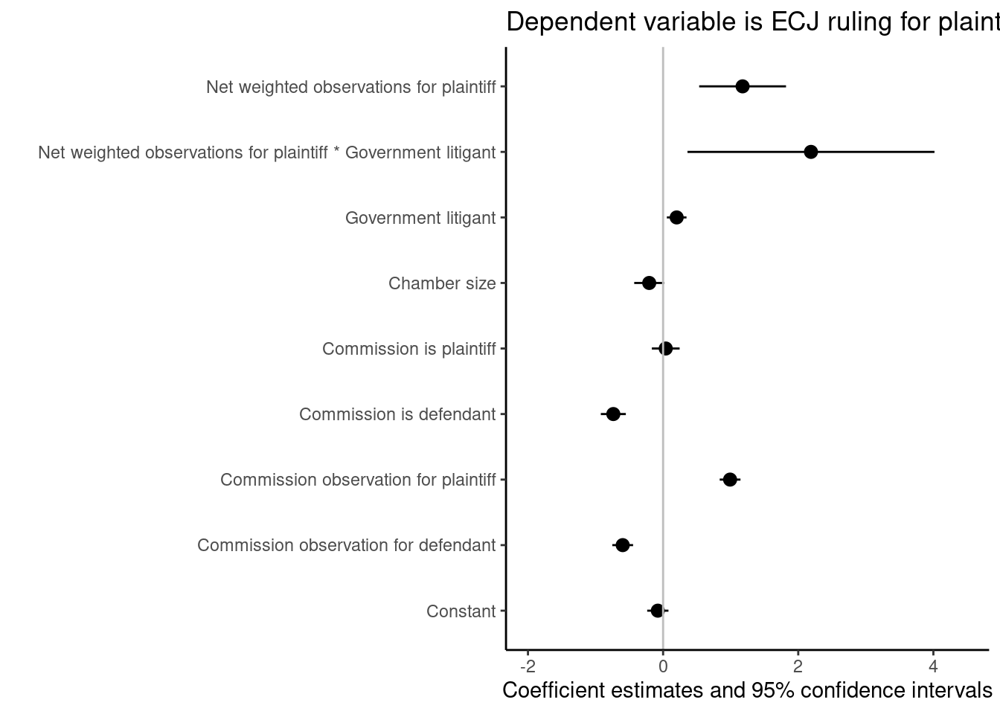
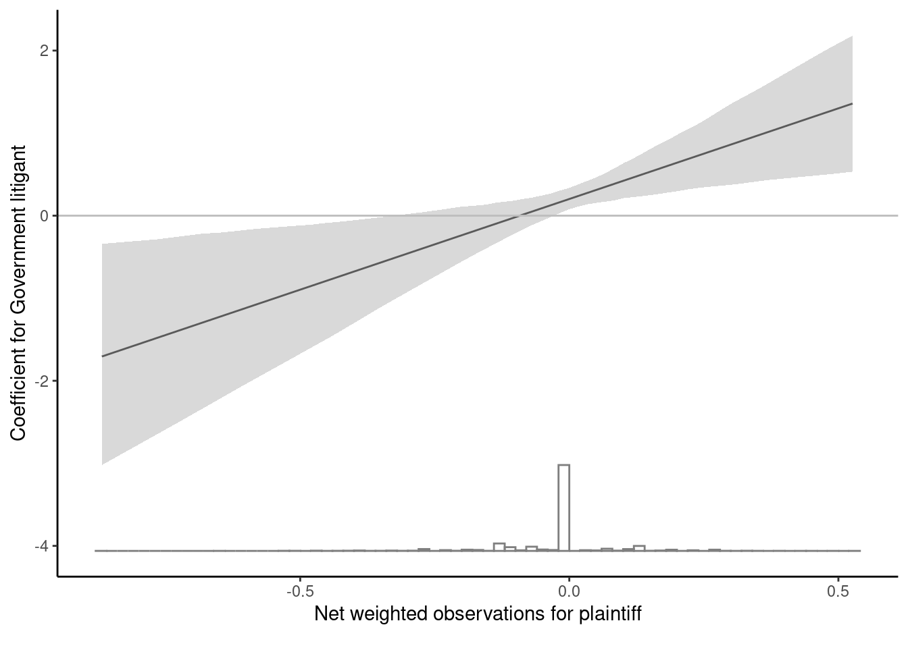
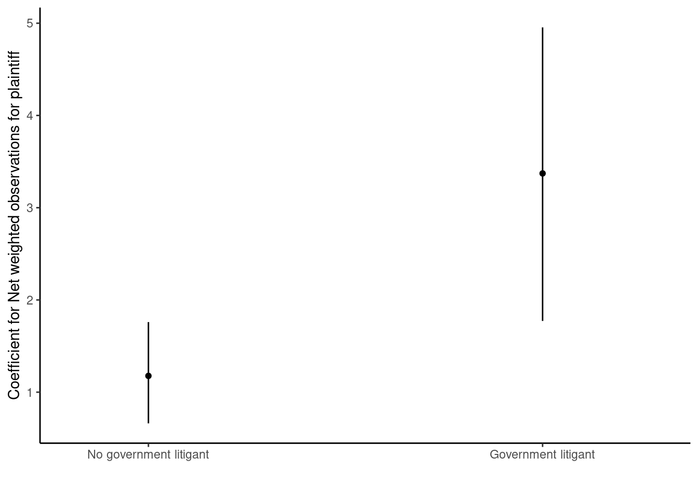

library(dplyr)
library(tidyr)
library(ggplot2)
library(haven)
library(readr)
library(broom)
library(sandwich)
library(modelsummary)
library(interplot)Visualizing regression models
Visualizations are not just useful for presenting your data. Visualizations can also be more effective than the traditional regression tables in communicating the results of your statistical analysis!
Coefficient plots
Coefficient plots are visualizations where the magnitude of each coefficient is displayed as a point with error bars indicating confidence intervals. Such confidence intervals typically better convey the uncertainty surrounding each coefficient than reporting the standard error and level of significance as is typically done in regression tables. Coefficient plots also make easy to compare different point estimates (for instance from different models against each other) (Kastellec and Leoni 2007, 763–67).
Lets’s look at some examples. We will use the following packages
Coefficient plots for a single regression model
Binder (2018) is interested in the factors that influence legislators willingness to bend the rules to strengthen legislative majorities. She investigates the decision of US Senators in 2017 to sign letter committing to save the “filibuster” procedure in the US Senate (which she interprets as an unwillingness to bend the rules). She hypothesizes that Republicans (the majority party) were less likely to sign the letter, but that republicans running for reelection in 2018 would be more likely to sign than other republicans, and that ideological outliers would be less likely to sign the letter. She controls for “other forces that may shape lawmakers’ procedural views including senators’ seniority in the chamber and whether they have ever served in the Senate minority party” (Binder 2018, 1460).
She estimates a single logistic regression model with the decision to sign the letter as the dependent variable. Instead of a regression table, she reports the coefficients and 95% confidence intervals in a coefficient plot (Binder 2018, 1461). We recreate this plot using broom and ggplot2
dodgingrules <- read_dta("../data/dodgingrules.dta")
1binder_model <- glm(filisave ~ running18 + gop + wings + leader +
stdrank + servedmin + running18:gop,
data = dodgingrules,
family = binomial(link = "logit"))
2tidy(binder_model) %>%
3 mutate(clustered_standard_error = sqrt(diag(vcovHAC(binder_model,
cluster = dodgingrules$stateid))),
4 upper = estimate + 1.96 * clustered_standard_error,
lower = estimate - 1.96 * clustered_standard_error,
5 term = case_when(term == "wings" ~ "Ideologue",
term == "running18:gop" ~ "GOP running in 2018",
term == "leader" ~ "Party leader",
term == "gop" ~ "Republican",
term == "stdrank" ~ "Chamber rank",
term == "servedmin" ~ "Served in minority",
term == "running18" ~ "Running in 2018"),
6 term = factor(term, levels = c("Running in 2018","Served in minority",
"Chamber rank","Republican","Party leader",
"GOP running in 2018", "Ideologue" ))) %>%
7 drop_na(term) %>%
8 ggplot(aes(y = term,
x = estimate,
xmin = lower,
xmax = upper))+
9 geom_vline(xintercept = 0, color = "grey", linetype = "longdash")+
10 geom_hline(aes(yintercept = term), color = "grey")+
11 geom_point(size = 2)+
12 geom_errorbarh(height = 0, size = 1)+
13 xlim(-10, 5)+
14 theme_classic()+
15 theme(panel.border = element_rect(color = "black", fill = NA))+
16 ylab("")+
xlab("")- 1
-
We reestimate her logistic regression using
glm(), which is the maximum likelihood equvalent ofstan_glm()fromrstanarm. - 2
-
Using
tidy()frombroomwe can get all the regression table as a nicedata.framethat is easy to work with. - 3
-
Binder (2018) clustered her standard errors by state. We can cluster the variance covariance matrix with
vcovHAC()from the sandwich package. The arguments we supply are a regression model (binder_model) and a variable to cluster ondodgingrules$stateid. We take the square root (sqrt()) of the diagonal (diag()) of this matrix to get the standard errors which we save as variable to thedata.frame(). - 4
- We create the upper/lower limits of the confidence intervals by taking each coefficient and adding/subtracting 1.96 times the standard error.
- 5
-
We recode the
termcolumn which has the variable for each coefficient to have the same labels as the one reported by Binder (2018). - 6
-
By making
factorvariable withlevelswe can ensure that the coefficients will have the same order in the figure as the order used by Binder (2018). - 7
-
We didn’t recode the
termfor the intercept so this row now hasNAon term. Binder (2018) didn’t report the intercept in her figure, so we will just omit this row. - 8
-
We start making our plot with
ggplot()we map the coefficient names to the y axis and the size of each coefficient to the x axis. In addition we now specifyxminandxmaxwhich are going to provide the lower and upper end of each confidence interval. - 9
- Adding a vertical line at 0 makes it easy to see which confidence interval cross zero (indicating that the coefficient is not is significant at the 0.05-level) and which don’t (indicating that the coefficient is statistically significant). Binder (2018) added a grey dashed line, so we do the same.
- 10
-
Binder (2018) also added some grey horizontal lines for each coefficient. These don’t serve a clear purpose, but adding them is easy enough and illustrates how we can also map the
yinterceptto variable in the dataset usingaes(). - 11
-
We add points for each coefficient and make them slightly larger then the default size using
size = 2. - 12
-
We use
geom_errorbarh()to create horizontal error bars for the confidence intervals. By default they have quite pronounced edges that we can remove by settingheight = 0. - 13
-
We adjust the length of the x-axis using
xlim(). - 14
-
We want to remove most of the background noise so we use
theme_classic(). - 15
-
The exception is that Binder (2018) had a black border around her figure, so adjust the
theme()to add such a border. We setfill = NAso that nothing is added inside the border. - 16
-
We remove the axis labels using
xlab()andylab().

The above example illustrates how you can make coefficient plots using the regular ggplot2 functionality. There are also packages that automatize more of this process for you. For instance, the modelSummary package that we used to create regression tables has a modelplot() function that produces coefficient plots.
Let’s see if we can recreate the figure using modelplot()!
1modelplot(binder_model,
2 vcov = vcovHAC(binder_model, cluster = dodgingrules$stateid),
3 coef_map = list("running18" = "Running in 2018",
"servedmin" = "Served in minority",
"stdrank" = "Chamber rank",
"gop" = "Republican",
"leader" = "Party leader",
"running18:gop" = "GOP running in 2018",
"wings" = "Ideologue"),
4 conf_level = 0.95)- 1
-
We supply the model to
modelplot()frommodelsummary. - 2
-
we can change how the standard errors are calculated using the
vcovargument. Note that we just supply a new variance-covariance matrix so we don’t need to extract the square root of the diagonal.modelplot()knows how to that for us. - 3
-
Just as for the tables we made using
modelsummary(), we can usecoef_mapto rename, reorder, and omit coefficients! - 4
- We decide whatever confidence interval we want here.

modelplot()Using modelplot() was arguably much easier, so many thanks to Arel-Bundock (2022)!
But the fun doesn’t stop. Since modelplot() produces a ggplot2 object, we can use all the `ggplot2 functions to further customize the figure! E.g.:
modelplot(binder_model,
vcov = vcovHAC(binder_model, cluster = dodgingrules$stateid),
coef_map = list("running18" = "Running in 2018",
"servedmin" = "Served in minority",
"stdrank" = "Chamber rank",
"gop" = "Republican",
"leader" = "Party leader",
"running18:gop" = "GOP running in 2018",
"wings" = "Ideologue"),
conf_level = 0.95) +
1 theme_classic() +
2 geom_vline(xintercept = 0, color = "grey", linetype = "longdash")- 1
- We can change the theme.
- 2
- We can add the dashed grey line to clarify which confidence intervals overlap with zero.

modelplot() with some additional adjustments.Coefficient plots with multiple regression models
Using coefficient plots arguably also makes it easier to compare coefficients and uncertainty estimates from multiple regression models. To distinguish between different models in the coefficient plot, we can for instance use different colors, different symbols for the coefficient points, different line types for the coefficient estimates or some combination.1 Alternatively, We can have different models on one the axis and use colors and symbols to distinguish between different coefficients.
For instance, Shen-Bayh (2022) argues that authoritarian regimes are more likely to use judicial means of repressing insider threats (and to use extrajudicial strategies towards outsider threats). Using a dataset on failed coup plots in Anglophone sub-Saharan Africa, she estimates three logistic regression with a binary indicator for whether judicial strategies were used to deal with the plotters (or not) as the dependent variable and the challengers were “regime insiders” the main independent variable (Shen-Bayh 2022, 341). The models differ in the control variables that are included. While Shen-Bayh (2022) report her results in a table, we will illustrate how they could also have been reported in a coefficient plot:
judicial_repression <- read_delim("../data/sb_judicial_repression_wp_2018.csv", delim = ",")
judicial_repression <- judicial_repression %>%
mutate(insider_threat = ifelse(challenger_type == "Insiders",1,0))
judicial_repression_logit1 <- glm(trial ~ insider_threat,
data = judicial_repression,
family = binomial(link="logit"))
judicial_repression_logit2 <- glm(trial ~ insider_threat + exec_mil,
data = judicial_repression,
family = binomial(link="logit"))
judicial_repression_logit3 <- glm(trial ~ insider_threat + exec_mil +
as.factor(country) + as.factor(year),
data = judicial_repression,
family = binomial(link="logit"))
modelplot(list("Model 1: no controls" = judicial_repression_logit1,
"Model 2: Controlling for military regime" = judicial_repression_logit2,
"Model 3: Controlling for military regime +\nyear and country fixed effects" = judicial_repression_logit3),
coef_map = list("insider_threat" = "Insider threat",
"exec_mil" = "Military regime",
"(Intercept)" = "Intercept"))+
geom_vline(xintercept = 0, color = "grey")
Figure Figure 4 makes it easy to compare the magnitude and uncertainty for the “Insider threat” coefficients across the three different specifications.
Plotting conditional coefficients to understand interactions
Interaction effects can often be difficult to understand just from looking at regression tables. It is therefore recommended to report conditional coefficients (the coefficient for one variable conditional on the levels of the variable it is interacted with) when you are interested in investigating interaction effects (Brambor, Clark, and Golder 2006). Conditional coefficients are typically best presented visually.
For instance, Carrubba, Gabel, and Hankla (2008) argue that European Court of Justice is influenced by the degree of support a plaintiff receives from European Union member states (who may submit briefs indicating their position on cases before the Court) and that this effect is even more pronounced when a government is a litigant in the case. They thus estimate the following probit model in which the net number of observations in favor of the plaintiff is interacted with whether a government is a litigant (Carrubba, Gabel, and Hankla 2008, 443):
load("../data/CarrubbaGabelHankla.RData")
1ecj_data <- table
ecj_probit <- glm(ECJPlAgree ~
normnetwobs * govislit +
percham +
CommIsPl +
CommIsDef +
CommObsPl +
CommObsDef,
2 family = binomial(link = "probit"),
data = ecj_data )
modelplot(ecj_probit,
coef_map = list( "(Intercept)" = "Constant",
"CommObsDef" = "Commission observation for defendant",
"CommObsPl" = "Commission observation for plaintiff",
"CommIsDef" = "Commission is defendant",
"CommIsPl" = "Commission is plaintiff",
"percham" = "Chamber size",
"govislit"= "Government litigant",
"normnetwobs:govislit" = "Net weighted observations for plaintiff * Government litigant",
"normnetwobs" = "Net weighted observations for plaintiff"),
vcov = vcovHAC(ecj_probit, cluster = ecj_data$casenumber))+
geom_vline(xintercept = 0, color = "grey")+
xlim(-2, 4.5)+
theme_classic()+
labs(title = "Dependent variable is ECJ ruling for plaintiff")- 1
-
The dataset in the
.RData-file was calledtable, which can be confusing. We give it a more informative name. - 2
-
Probit models are very similar to logistic regressions, but have a different link function. You can estimate them using
glm()orstan_glm(), but you need to change thelinkargument.

How can we interpret the coefficient for “Government litigant”? It does not capture the general relationship between a government being a litigant and a ruling for the plaintiff. Rather it effects the conditional coefficient for this relationship when “Net weighted observations for plaintiff” is 0. To better understand the relationship between “Government litigant” and the outcome, we should therefore plot conditional coefficients for “Government litigant” for different levels on “Net weighted observations for plaintiff”. It is easy to do so using the interplot() function from the interplot package:
1interplot(ecj_probit,
2 var1 = "govislit",
3 var2 = "normnetwobs",
4 hist = TRUE)+
5 xlab("Net weighted observations for plaintiff")+
ylab("Coefficient for Government litigant")+
geom_hline(yintercept = 0, color = "grey") +
theme_classic()- 1
- We supply the model.
- 2
- We then supply the variable we want the conditional coefficient for.
- 3
- We supply the name of the other variable in the interaction (the moderator).
- 4
-
We can make
interplotadd a histogram for the moderator, which is avoid us from making strong inferences for levels of the moderators which are very unusual in the data (and thus hard to estimate precisely). - 5
-
Since
interplot()produces aggplot2object, we can use our usualggplot2functions to add layers and change the appearance of the graph.

Figure 6 suggests that when there is strong support for the plaintiff, a government litigant is correlated with a higher likelihood for a ruling in favor of the plaintiff, but that this relationship reverses when there is strong opposition to the plaintiff.
An alternative way to interpret the model (and indeed this is the way that Carrubba, Gabel, and Hankla (2008) look at it) is that the relationship “Net weighted observations for plaintiff” is conditional on whether a government is a plaintiff or not. If so, what we really should look at is the conditional coefficient for “Net weighted observations for plaintiff” for the two different values on “Government is litigant”. That’s also easy to do:
interplot(ecj_probit,
var1 = "normnetwobs",
var2 = "govislit",
1 point = TRUE)+
xlab("")+
ylab("Coefficient for Net weighted observations for plaintiff")+
theme_classic()+
2 scale_x_continuous(breaks = c(0,1),
labels = c("No government litigant", "Government litigant"),
limits = c(-0.2, 1.3))- 1
-
Since there are only two values on
govislit, it is better to use points than a line. We can adjust this using thepointargument. - 2
-
Since
govislitis introduced to the model as a numeric variable,ggplot2will give us a continuous scale. We can still add categorical labels like this.

Figure 7 shows that while “Net weighted observations for plaintiff” is generally associated with a higher likelihood of a ruling for the plaintiff, this relationship is larger when there is a government litigant.
References
Arel-Bundock, Vincent. 2022. “Modelsummary: Data and Model Summaries in R.” Journal of Statistical Software 103: 1–23.
Binder, Sarah. 2018. “Dodging the Rules in Trump’s Republican Congress.” The Journal of Politics 80 (4): 1454–63.
Brambor, Thomas, William Roberts Clark, and Matt Golder. 2006. “Understanding Interaction Models: Improving Empirical Analyses.” Political Analysis 14 (1): 63–82.
Carrubba, Clifford J, Matthew Gabel, and Charles Hankla. 2008. “Judicial Behavior Under Political Constraints: Evidence from the European Court of Justice.” American Political Science Review 102 (4): 435–52.
Kastellec, Jonathan P, and Eduardo L Leoni. 2007. “Using Graphs Instead of Tables in Political Science.” Perspectives on Politics 5 (4): 755–71.
Shen-Bayh, Fiona. 2022. Undue Process: Persecution and Punishment in Autocratic Courts. Cambridge University Press.
Footnotes
Although coefficient plots make it easier to compare multiple models, it can be hard to distinguish a very large number of models based on colors and symbols.↩︎